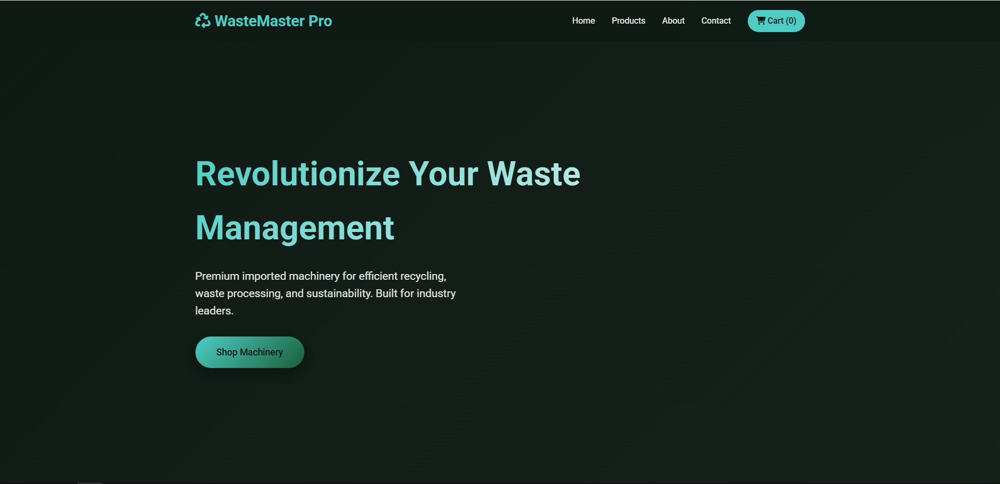

Super Admin Dashboard
Review platform-wide health, analyze performance reports, and manage high-level roles across the WasteTech system.

Platform Status
All core services are online with no critical disruptions reported today.
Role Changes
6 access requests are waiting for final approval or rejection.
Growth Snapshot
User registrations increased 12% compared to the previous monthly cycle.
Report
Use the report area to review the latest system metrics, ticket load, and adoption trends.
| Metric | Current | Trend |
|---|---|---|
| Registered Users | 184 | Up 12% |
| Completed Orders | 426 | Up 8% |
| Open Tickets | 12 | Down 3% |
Role Management
Set privileges clearly across public users, account holders, admins, and super admins.
| Role | Main Access | Approval Level |
|---|---|---|
| General | Public browsing and contact | Open Access |
| User | Orders, profile, support | Account Required |
| Admin | Order, product, and user operations | Admin Approval |
| Super Admin | Reports and role control | Executive Approval |